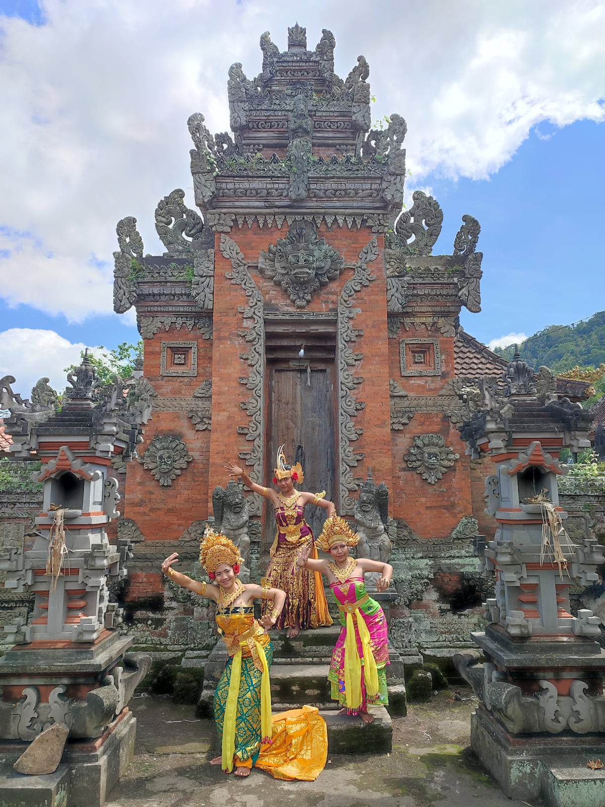
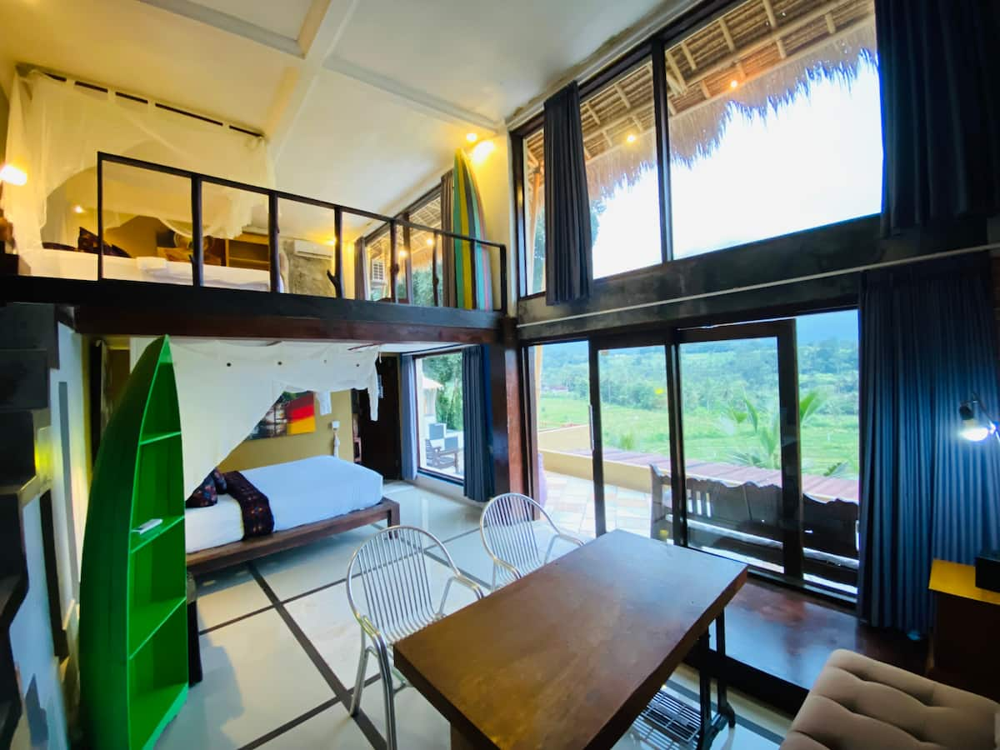
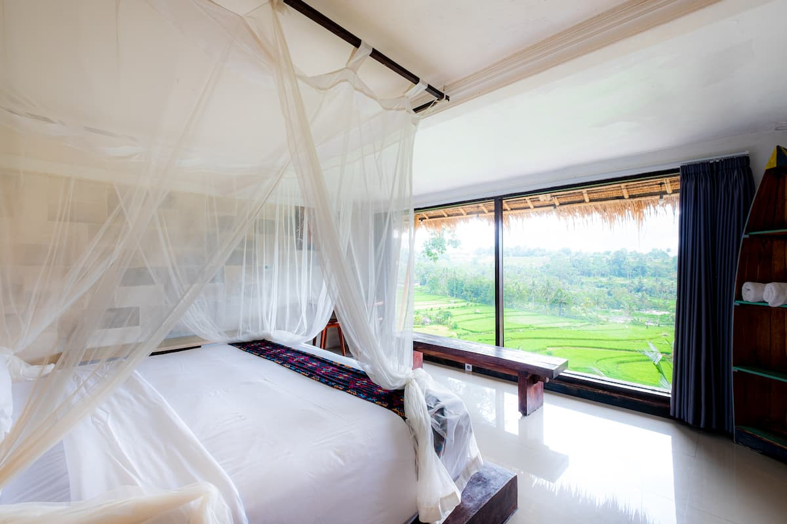

Villa Photos






Villa Overview
2 Bedrooms
Loft-style design
2 Bathrooms
Modern fixtures
4 Guests
Cozy for duo
Private Pool
With volcano views
Mt. Agung Views
Wake up to the volcano
Rice Terraces
Surrounded by green
🌋 Why Sidemen is Bali's Best-Kept Secret
368 reviews prove this place is special! Sidemen is the hidden valley where time moves slowly. Zero tourists, stunning Mt. Agung views, authentic village life, and prices 50% lower than Ubud. This is the real Bali experience. The pool with volcano views is absolutely magical at sunrise.
Amenities
Sample Week Itinerary
Arrival in Paradise Valley
Sunrise & Rice Terrace Walk
Besakih & Holy Sites
Work Day + Village Life
Waterfall Adventure
Water Palaces Day
Mt. Agung Sunrise Trek (Optional)
Local Restaurants
Warung Rekreasi Sidemen
Local favorite with incredible Mt. Agung views. Authentic Balinese food at local prices. The ayam betutu is amazing.
View on Map →Mahagiri Panoramic Resort Restaurant
Stunning infinity pool restaurant overlooking rice terraces. Great for Instagram shots and good Western/Indonesian food.
View on Map →Tirta Ayu Restaurant
Overlooks Tirta Gangga water palace. Book a gazebo over the water for an unforgettable lunch.
View on Map →Warung Tengah Sawah
Hidden warung in the middle of rice fields. You literally walk through paddies to get there. Ultra-local experience.
View on Map →Unique Sidemen Activities
Traditional Weaving Villages
Sidemen is famous for songket weaving. Visit family workshops and watch artisans at work. Buy directly from makers.
Mt. Agung Sunrise Trek
The closest starting point to Bali's highest peak. Challenging 4-8 hour trek. Book local guides from Sidemen.
Tukad Cepung Waterfall
Magical underground waterfall with light beams streaming through cave. One of Bali's most photogenic spots. Go at 8-10am for best light.
Rice Terrace Walks
Sidemen terraces are less touristy than Tegallalang. Walk through with a local guide for the full experience.
Monthly Budget Breakdown
| Expense | Estimated Cost |
|---|---|
| Villa (30 nights) | $1,506 |
| Food & Dining (local prices!) | $350 - $500 |
| Scooter Rental | $100 |
| Activities & Tours | $200 - $350 |
| Temple Donations | $30 |
| Misc & Transport | $75 |
| TOTAL (per person, shared) | $1,131 - $1,281 |
💡 This is the cheapest quality option - incredible value with volcano views!
🔮 Exclusive Experiences in Sidemen
🌋 Mt. Agung Sunrise Trek
Bali highest peak. Start 1am, summit at sunrise.
🌾 Sidemen Rice Terraces
Zero tourists, authentic farming villages, stunning
💧 Tirta Gangga Water Palace
Royal water gardens. Swim in sacred springs!
🌋 Wake Up to Mt. Agung
368 reviews, volcano views, zero tourists. The real Bali awaits.
Book on Airbnb →